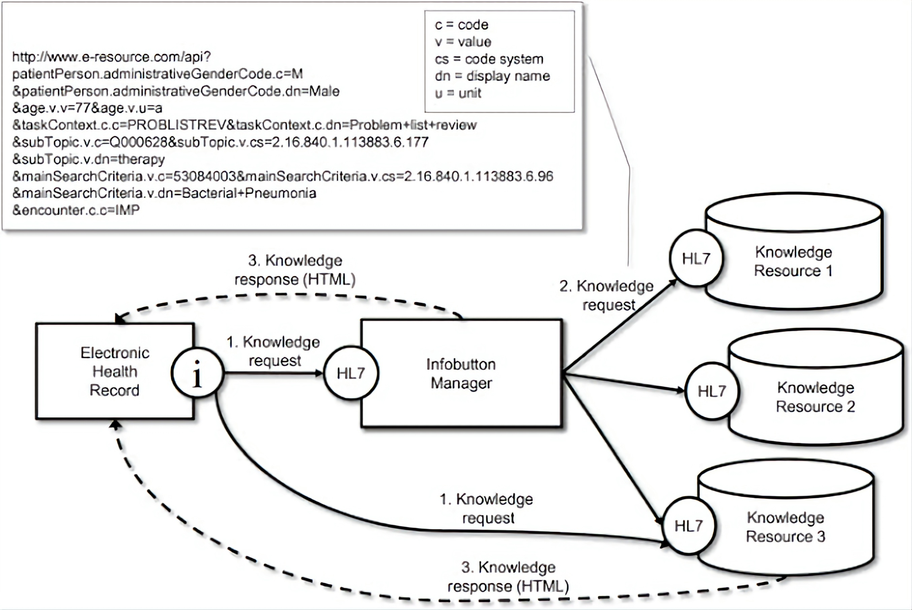
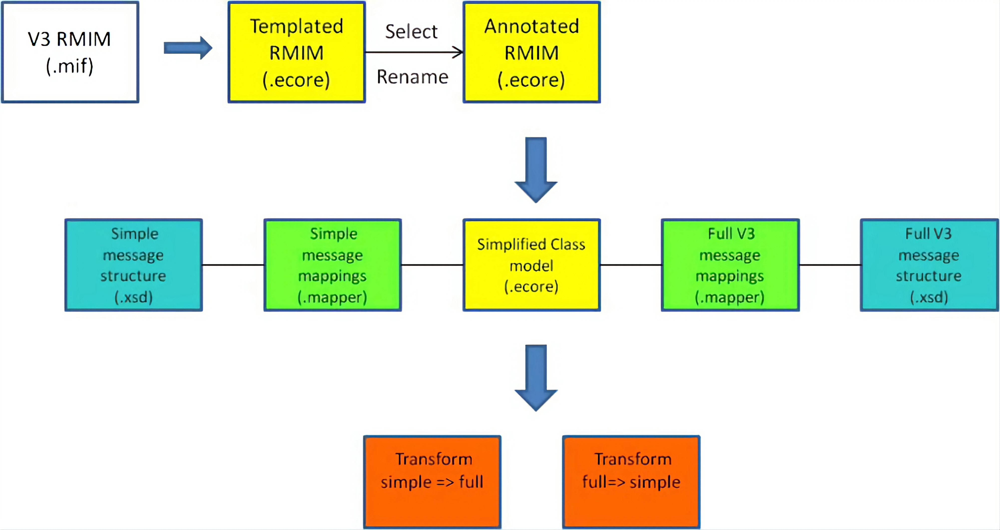

HL7 Version 2
Description
HL7 Version 2.x (V2) messaging standard is the workhorse of electronic data exchange in the clinical domain and arguably the most widely implemented standard for healthcare in the world. This messaging standard allows the exchange of clinical data between systems. It is designed to support a central patient care system as well as a more distributed environment where data resides in departmental systems.

Targets
- Healthcare IT Vendors
- Healthcare Providers
Benefits
- Supports the majority of the common interfaces used in the healthcare industry globally
- Provides a framework for negotiations of what is not in the standard
- Reduces implementation costs
- Generally backward compatible
Case studies
- 95% of US healthcare organizations use HL7 V2.x
- More than 35 countries have HL7 V2.x implementations
Development Background
As one of the most widely implemented standards for healthcare information in the world, the Version 2 Messaging Standard was first released in October 1987 as an Application Protocol for Electronic Data Exchange in Healthcare Environments. Version 2.7, representing the latest update to the Version 2 Standard, was published in 2011.
Due to its widespread use, Version 2 will continue to play an integral part in healthcare messaging, even with the HL7 Version 3 Normative Edition. HL7 is committed to supporting and extending Version 2 in parallel with Version 3, providing continuity for current installations.For more information Click here.
CDA (HL7 Clinical Document Architecture)
Description
he HL7 Version 3 Clinical Document Architecture (CDA®) is a document markup standard that specifies the structure and semantics of "clinical documents" for the purpose of exchange between healthcare providers and patients. It defines a clinical document as having the following six characteristics: 1) Persistence, 2) Stewardship, 3) Potential for authentication, 4) Context, 5) Wholeness and 6) Human readability.
A CDA can contain any type of clinical content -- typical CDA documents would be a Discharge Summary, Imaging Report, Admission & Physical, Pathology Report and more. The most popular use is for inter-enterprise information exchange, such as is envisioned for a US Health Information Exchange (HIE).
Targets
- Healthcare Providers
- Healthcare IT Vendors
- Departmental Systems
- Dictation/Transcription Vendors
Benefits
- Supports the exchange of clinical documents between those involved in the care of a patient
- Supports the re-use of clinical data for public health reporting, quality monitoring, patient safety and clinical trials
- Can be reused in multiple applications
- Provides a mature and proven architecture for structured and unstructured documents that integrates with HL7 FHIR
Case studies
- International users in countries where health information exchange (HIE) is well established such as Finland, Greece and Germany Pilot HIEs in Canada, Japan, Korea, Mexico, Argentina and elsewhere CDA is firmly in the plans for many of the nascent US HIEs and the US Military Health System
- Columbia-Presbyterian in New York: Project on CDA note generation with knowledge management and controlled vocabulary/li>
Development Background
CDA® grew out of work that originated outside of HL7 in early 1996 when a group of physicians including Tom Lincoln, John Spinosa, Dan Essin, John Mattison and Bob Dolin began to meet to discuss the potential for structured markup in clinical documents. The earliest draft was called the Kona Architecture and was developed in 1997 after the group had joined HL7.
Since that time, many people have worked on it and the basic ideas have been refined and developed along with the HL7 Version 3 framework and the Reference Information Model (RIM). The original group morphed into the HL7 Structured Documents Work Group which is responsible for CDA and other HL7 document types.For more information Click here.
FHIR® (HL7 Fast Healthcare Interoperability Resources)
Description
FHIR is an interoperability standard intended to facilitate the exchange of healthcare information between healthcare providers, patients, caregivers, payers, researchers, and any one else involved in the healthcare ecosystem. It consists of 2 main parts – a content model in the form of ‘resources’, and a specification for the exchange of these resources in the form of real-time RESTful interfaces as well as messaging and Documents.

Targets
- Clinical and Public Health Laboratories
- Immunization Registries
- Quality Reporting Agencies
- Standards Development Organizations (SDOs)
- Regulatory Agency
Benefits
- Creates a common specification by which healthcare participants can share information
- Enables the development of applications that benefit from access to of high quality information in a manner that implementers find as easy to use as possible
- Supports improvements in the delivery of healthcare including new initiatives such as Value Based care
Case studies
- FHIR has been implemented by numerous organizations, both as part of Connectathon interoperability events as well as for pilot implementations.
Development Background
CDA® grew out of work that originated outside of HL7 in early 1996 when a group of physicians including Tom Lincoln, John Spinosa, Dan Essin, John Mattison and Bob Dolin began to meet to discuss the potential for structured markup in clinical documents. The earliest draft was called the Kona Architecture and was developed in 1997 after the group had joined HL7.
Since that time, many people have worked on it and the basic ideas have been refined and developed along with the HL7 Version 3 framework and the Reference Information Model (RIM). The original group morphed into the HL7 Structured Documents Work Group which is responsible for CDA and other HL7 document types.For more information Click here.
HL7 Version 3 Product Suite
Description
The Health Level Seven Version 3 (V3) Normative Edition—a suite of specifications based on HL7’s Reference Information Model (RIM)—provides a single source that allows implementers of V3 specifications to work with the full set of messages, data types, and terminologies needed to build a complete implementation. The 2015 Normative Edition represents the seventh publication of the complete suite of V3 specifications, and contains those Version 3 Standards that are ANSI Approved, those that have passed Normative Level Ballot and are awaiting final ANSI Approval, and Draft Standards for Trial Use (DSTU). It includes standards for communications that document and manage the care and treatment of patients in a wide variety of healthcare settings. As such, it is a foundational part of the technologies needed to meet the global challenge of integrating healthcare information, in areas such as patient care and public health.
The Version 3 Normative Edition represents a new approach to clinical information exchange based on a model driven methodology that produces messages and electronic documents expressed in XML syntax. The V3 specification is built around subject domains that provide storyboard descriptions, trigger events, interaction designs, domain object models derived from the RIM, hierarchical message descriptors (HMDs) and a prose description of each element. Implementation of these domains further depends upon a non-normative V3 Guide and normative specifications for: data types; the XML technical specifications (ITS) or message wire format; message and control "wrappers", and transport protocols.
Members can access the latest Normative Edition online.
Targets
- Focuses on semantic interoperability by specifying that information be presented in a complete clinical context that assures that the sending and receiving systems share the meaning (semantics) of the information being exchanged.
- Designed for universal application so that the standards can have the broadest possible global impact and yet be adapted to meet local and regional requirements.
- Provides consistent representation of data laterally across the various HL7 domains of interest and longitudinally over time as new requirements arise and new fields of clinical endeavor are addressed
- Allows implementers to take advantage, at any point in time, of the latest and most effective implementation technologies available
Benefits
- NHS (UK National Health Service) uses specifications based on the HL7 V3 Reference Information Model, data types and methodology in nearly 2 million V3 transactions per day
- The Netherlands: V3 messages are at the core of the Dutch national health infrastructure, focused on medication information and GP records; as well as the DBC Grouper, a central service that validates and attaches a price tag to all care activities performed for a patient
- Canada: V3 is a central part of the EHR Architectural Blueprint that is at the core of the Jurisdictional EHR implementations; Almost every jurisdiction in Canada has implemented V3 Pharmacy messages and many of them have implemented V3 Lab messages. Ontario has developed V3 messages for referrals. The Western Provinces have developed Chronic Disease Management V3 messages and many of them have implemented them. Client and Provider registry messages have been developed in many of the registry applications.
- Other implementations in Mexico, Germany and Croatia
Case studies
- Other implementations in Mexico, Germany and Croatia
Development Background
CVersion 3 represents a significant departure from "business as usual" for HL7. Offering a lot of optionality and thus flexibility, the V2.x series of messages are widely implemented and very successful. These messages evolved over several years using a "bottom-up" approach that has addressed individual needs through an implied methodology that, in lieu of a pre-defined implementation guide, typically depends on bi-lateral negotiations between participating HIT system implementations. There is neither a consistent view of the data that HL7 moves nor the data's relationship to other data. HL7's V2 success is also largely attributable to its flexibility. It contains many optional data elements and data segments, making it adaptable to almost any site. While providing great flexibility, its optionality also contributes to an inability to support reliable conformance testing and also requires implementers to spend more time analyzing and planning their interfaces to ensure that both parties are using the same optional features.
HL7's primary goal for Version 3 is to offer a standard that is definite and testable, and provide the ability to certify vendors' conformance.
Samples
If you want to fully understand all the data from an hl7 file we recommend to downland hl7 soup a hl7 file reader that shows all the data and displays them in a readable layout
To download HL7 soup Click here.